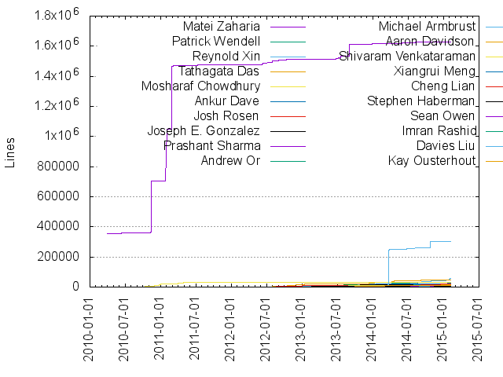
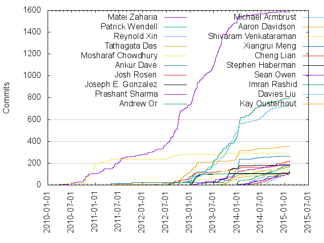

Authors
| Author | Commits (%) | + lines | - lines | First commit | Last commit | Age | Active days | # by commits |
|---|
| Matei Zaharia | 1585 (16.44%) | 1627118 | 1150466 | 2010-03-30 | 2015-02-05 | 1773 days, 18:54:55 | 504 | 1 |
| Patrick Wendell | 805 (8.35%) | 29935 | 21648 | 2012-09-28 | 2015-02-06 | 860 days, 3:19:23 | 317 | 2 |
| Reynold Xin | 767 (7.95%) | 57648 | 42296 | 2012-03-23 | 2015-02-06 | 1050 days, 5:16:09 | 307 | 3 |
| Tathagata Das | 353 (3.66%) | 48582 | 29986 | 2011-06-05 | 2015-02-03 | 1339 days, 9:31:19 | 166 | 4 |
| Mosharaf Chowdhury | 290 (3.01%) | 30682 | 46251 | 2010-04-04 | 2013-10-19 | 1293 days, 10:03:46 | 118 | 5 |
| Ankur Dave | 264 (2.74%) | 22127 | 20300 | 2011-04-13 | 2014-11-17 | 1314 days, 17:09:27 | 80 | 6 |
| Josh Rosen | 221 (2.29%) | 18356 | 8496 | 2012-07-19 | 2015-02-06 | 932 days, 18:15:01 | 150 | 7 |
| Joseph E. Gonzalez | 185 (1.92%) | 18109 | 12606 | 2013-04-03 | 2014-11-26 | 601 days, 16:12:20 | 56 | 8 |
| Prashant Sharma | 183 (1.90%) | 22447 | 12890 | 2013-01-16 | 2015-01-19 | 733 days, 0:23:44 | 114 | 9 |
| Andrew Or | 174 (1.80%) | 22167 | 9012 | 2013-12-24 | 2015-02-06 | 409 days, 17:06:51 | 108 | 10 |
| Michael Armbrust | 163 (1.69%) | 304016 | 53739 | 2014-03-02 | 2015-02-07 | 341 days, 23:39:15 | 101 | 11 |
| Aaron Davidson | 160 (1.66%) | 14578 | 5218 | 2013-09-04 | 2015-01-09 | 491 days, 18:13:24 | 99 | 12 |
| Shivaram Venkataraman | 140 (1.45%) | 8531 | 4330 | 2012-08-02 | 2014-10-28 | 816 days, 21:09:11 | 73 | 13 |
| Xiangrui Meng | 129 (1.34%) | 26721 | 11197 | 2014-02-03 | 2015-02-06 | 368 days, 2:40:50 | 93 | 14 |
| Cheng Lian | 116 (1.20%) | 20467 | 9675 | 2014-03-08 | 2015-02-06 | 335 days, 15:56:56 | 88 | 15 |
| Stephen Haberman | 109 (1.13%) | 3518 | 3381 | 2013-01-05 | 2015-02-06 | 762 days, 14:20:34 | 40 | 16 |
| Sean Owen | 107 (1.11%) | 8363 | 6576 | 2014-01-02 | 2015-01-31 | 394 days, 2:22:45 | 84 | 17 |
| Imran Rashid | 105 (1.09%) | 2499 | 1351 | 2012-07-12 | 2015-02-04 | 936 days, 15:24:38 | 43 | 18 |
| Davies Liu | 105 (1.09%) | 12685 | 5481 | 2014-07-21 | 2015-02-04 | 198 days, 3:55:15 | 72 | 19 |
| Kay Ousterhout | 103 (1.07%) | 9874 | 8776 | 2013-05-12 | 2015-01-26 | 623 days, 1:18:24 | 68 | 20 |
These didn't make it to the top: Karen Feng, Denny, Kousuke Saruta, Sandy Ryza, Mark Hamstra, Charles Reiss, Mridul Muralidharan, Jey Kottalam, root, zsxwing, Cheng Hao, Takuya UESHIN, Reza Zadeh, jerryshao, Dan Crankshaw, Yin Huai, Ismael Juma, Holden Karau, Andy Konwinski, Thomas Graves, Tor Myklebust, Raymond Liu, Marcelo Vanzin, wangfei, CodingCat, Andrew Ash, Nick Pentreath, Ali Ghodsi, Joseph K. Bradley, witgo, Nicholas Chammas, Andrew xia, Daoyuan Wang, Dmitriy Lyubimov, seanm, Liang-Chi Hsieh, Hossein Falaki, GuoQiang Li, DB Tsai, Evan Chan, scwf, Henry Saputra, WangTaoTheTonic, Harvey Feng, Lian, Cheng, Kan Zhang, ravipesala, haitao.yao, Y.CORP.YAHOO.COM\tgraves, Joey, Xinghao, Sandeep, Masayoshi TSUZUKI, Doris Xin, tgravescs, shane-huang, William Benton, Wang Jianping J, CrazyJvm, Matthew Farrellee, Justin Ma, shivaram, ryanlecompte, Thomas Dudziak, Mingfei, lianhuiwang, Jianping J Wang, Andre Schumacher, prabeesh, liguoqiang, Zongheng Yang, Zhang, Liye, WangTao, Ryan Williams, Mikhail Bautin, Jacky Li, Gavin Li, Chen Chao, haoyuan, baishuo(白硕), Evan Sparks, Binh Nguyen, Ahir Reddy, wangda.tan, Ryan LeCompte, Liquan Pei, Konstantin Boudnik, Jongyoul Lee, Hari Shreedharan, Burak Yavuz, BlackNiuza, Aaron Staple, freeman, Tyson, Travis Galoppo, Richard Benkovsky, RJ Nowling, Prabeesh K, Kostas Sakellis, Jacek Lewandowski, Harvey, Ethan Jewett, Daniel Darabos, Ameet Talwalkar, Akihiro Matsukawa, stayhf, lewuathe, eklavya, cocoatomo, Xusen Yin, Venkata Ramana Gollamudi, Takeshi Yamamuro, Rohit Rai, Rahul Singhal, Peter Sankauskas, OopsOutOfMemory, Neville Li, Manish Amde, Haoyuan Li, Grace Huang, Frank Dai, Edison Tung, Christopher Nguyen, Benjamin Hindman, Antonio, Anand Avati, Allan Douglas R. de Oliveira, wangxiaojing, walker, luogankun, jyotiska, huangzhaowei, harshars, chutium, Yuhao Yang, Ye Xianjin, Yash Datta, Olivier Grisel, Kyle Ellrott, KarthikTunga, Ilya Ganelin, Harold Lim, Ewen Cheslack-Postava, Daoyuan, w00228970, tdas, qiping.lqp, maji2014, folone, Zhen Peng, YanTangZhai, Yadong Qi, Vida Ha, Stevo Slavić, Rui Li, Mike, Martin Weindel, Marek Kolodziej, Ken Takagiwa, James Phillpotts, Erik Erlandson, Burak, Bouke van der Bijl, Bill Zhao, Bernardo Gomez Palacio, Anant, Alex Liu, yantangzhai, unknown, uncleGen, soulmachine, q00251598, nchammas, mcheah, kalpit, jbencook, hushan[胡珊], guowei2, carlmartin, andrewor14, Zhan Zhang, Timothy Hunter, Syed Hashmi, Sundeep Narravula, Ravi Pandya, Nick Lanham, Nathan Kronenfeld, Nathan Howell, Michael Giannakopoulos, MechCoder, Matthew Taylor, Luca Rosellini, Larry Xiao, Jyotiska NK, JerryLead, Grega Kespret, Ginger Smith, Eric Liang, Diana Carroll, David McCauley, Cody Koeninger, Christoph Grothaus, Brennon York, Brenden Matthews, Andrew Tulloch, Alexander Ulanov, Alexander Pivovarov, yingjieMiao, tzolov, tmalaska, tianyi, tedyu, shiyun.wxm, rrmckinley, qqsun8819, peng.zhang, nravi, meiyoula, mbautin, luluorta, li-zhihui, koeninger, kai, joyyoj, johnnywalleye, fengdong, egraldlo, ctn, coderxiang, bilna, azuryyu, aniketbhatnagar, anfeng, Yinan Li, Yanjie Gao, Yanbo Liang, Wenchen Fan, Vadim Chekan, Uri Laserson, Tobias Schlatter, Timothy Chen, Tianshuo Deng, Stephen Boesch, Shuo Xiang, Saurabh Rawat, Sarah Gerweck, Russell Cardullo, RongGu, Qiuzhuang Lian, Qiping Li, Punya Biswal, Prabin Banka, Pillis, Paul Cavallaro, Nishkam Ravi, NirmalReddy, Niklas Wilcke, Neal Wiggins, Michelangelo D'Agostino, Michael Nazario, Michael Davies, Martin Jaggi, Mark Grover, Madhu Siddalingaiah, LiGuoqiang, Li Pu, Leolh, Koert Kuipers, Kevin Mader, Joshua Hartman, Jim Lim, Jim Carroll, Jeremy Freeman, Ilayaperumal Gopinathan, Hossein, Hiral Patel, Gregory Owen, Grace, Fabrizio (Misto) Milo, Erik Selin, Du Li, Daniel Lemire, Dan McClary, Dale, Colin Patrick Mccabe, Chris Fregly, Chris Cope, Chip Senkbeil, Chia-Yung Su, Chandan Kumar, Bryn Keller, Bijay Bisht, ArcherShao, Aaron Kimball, xuan, xinyunh, xiao321, x1-, woshilaiceshide, viper-kun, viirya, u0jing, tkaessmann, surq, strat0sphere, sproblvem, sigmoidanalytics, shitis, shane knapp, seayi, sboeschhuawei, sarutak, roxchkplusony, prudhvi, prashant, prabinb, omgteam, oded, nemccarthy, nate.crosswhite, nartz, msiddalingaiah, martinzapletal, lirui, likun, larvaboy, kul, kj-ki, kballou, jmu, jianghan, jay@apache.org, industrial-sloth, iAmGhost, hzw19900416, hhd, guowei, giwa, genmao.ygm, ganonp, fireflyc, fi, epahomov, dhardy92, derek ma, comcmipi, cody koeninger, chirag, chesterxgchen, cdshines, bpaulin, baishuo, atalwalkar, arahuja, ankit.bhardwaj, anitatailor, anant asthana, alexdebrie, akkomar, Zichuan Ye, Zdenek Farana, Yuu ISHIKAWA, Yu L Li, Yoshihiro Shimizu, Yijie Shen, Yandu Oppacher, Yadong, Yadid Ayzenberg, Xutingjun, XuTingjun, Ximo Guanter Gonzalbez, Xi Liu, Winston Chen, Wenchen Fan(Cloud), Ward Viaene, Vladimir Vladimirov, Vlad, Victsm, Varun Saxena, Varakhedi Sujeet, Varadharajan Mukundan, Ubuntu, Tsuyoshi Ozawa, Tom Panning, Thu Kyaw, Tatiana Borisova, Tal Sliwowicz, Takayuki Hasegawa, Szul, Piotr, Sung Chung, Sumedh Mungee, Soumitra Kumar, Shiti, Semih Salihoglu, Sebastien Rainville, Sasaki Toru, Santiago M. Mola, Sameer Agarwal, Saldanha, Saisai Shao, Sadhan Sood, Roman Tkalenko, Rob O'Dwyer, Rishi Verma, Renat Yusupov, Ray Racine, RIA-pierre-borckmans, Qiuzhuang.Lian, Prudhvi Krishna, Petko Nikolov, Peter Vandenabeele, Peter MacKinnon, Peter Klipfel, Ori Kremer, Oleg Danilov, Octavian Geagla, Nan Zhu, NamelessAnalyst, Naftali Harris, Mubarak Seyed, Mike Timper, Mike Jennings, Miguel Peralvo, Michael Heuer, Michael Griffiths, Matthew Rocklin, Matt Forbes, Mark Wagner, Mark Mims, Mark G. Whitney, Mario Pastorelli, Manuel Laflamme, Makoto Fukuhara, Liu Jiongzhou, Lijie Xu, Lian Cheng, Li Zhihui, Leemoonsoo, Lars Albertsson, LY Lai, Kun Li, Kenji Kikushima, Kenichi Maehashi, Kazuki Taniguchi, Kashish Jain, Karthik, Kanwaljit Singh, Kannan Rajah, Kalpit Shah, KaiXinXiaoLei, Jyun-Fan Tsai, Judy Nash, Joseph J.C. Tang, John Zhao, Jiacheng Guo, Jesper Lundgren, Jeff Thompson, Jeff Steinmetz, Jeff Hammerbacher, Jean-Martin Archer, James Z.M. Gao, Jakub Dubovský, Jakub Dubovsky, Jacek Laskowski, Ivan Wick, Ivan Vergiliev, Iulian Dragos, Issac Buenrostro, Idan Zalzberg, Ian O Connell, Ian Hummel, Ian Buss, Huajian Mao, Hong Shen, Henry Cook, Guillaume Ballet, Guancheng (G.C.) Chen, Grzegorz Dubicki, Graham Dennis, Giovanni Delussu, Gera Shegalov, GenTang, Gaspar Munoz, Gang Bai, Gabriele Nizzoli, Gabe Mulley, Funes, FlytxtRnD, Fernando Otero (ZeoS), Fernand Pajot, Felix Maximilian Möller, EugenCepoi, Ernest, Erik van oosten, Eric Zhang, Eric Moyer, Eric Eijkelenboom, Eran Medan, Emtiaz Ahmed, Elmer Garduno, Egor Pakhomov, DoingDone9, Denny Lee, Davis Shepherd, David Y. Ross, David Lemieux, Dariusz Kobylarz, Dan Osipov, Daemoen, CruncherBigData, Colin Patrick McCabe, Colin McCabe, Clément MATHIEU, Cliff Engle, Christophe Préaud, Christoph Sawade, Christian Lundgren, Cesar Arevalo, Brock Noland, Bill Bejeck, Bharath Bhushan, Bertrand Bossy, Benoy Antony, Basit Mustafa, Basin, Arun Ramakrishnan, Artjom-Metro, Ariel Rabkin, Andrey Kouznetsov, Andrew Psaltis, Andrew Bullen, Anatoli Fomenko, Alex Baretta, Albert Chu, Akshat Aranya, Akhil Das, Adam Pingel, Adam Novak, AbhishekKr
Only top 20 authors shown
Only top 20 authors shown
| Month | Author | Commits (%) | Next top 5 | Number of authors |
|---|
| 2015-02 | Reynold Xin | 18 (10.47% of 172) | Xiangrui Meng, Patrick Wendell, Davies Liu, wangfei, OopsOutOfMemory | 68 |
| 2015-01 | Reynold Xin | 27 (10.31% of 262) | Sean Owen, Kousuke Saruta, Josh Rosen, zsxwing, Xiangrui Meng | 93 |
| 2014-12 | zsxwing | 16 (5.65% of 283) | Cheng Hao, Andrew Or, Patrick Wendell, Daoyuan Wang, Sean Owen | 94 |
| 2014-11 | Davies Liu | 25 (7.89% of 317) | Xiangrui Meng, Cheng Lian, Andrew Or, Michael Armbrust, Aaron Davidson | 96 |
| 2014-10 | Kousuke Saruta | 19 (5.86% of 324) | Cheng Lian, Davies Liu, Josh Rosen, Andrew Or, Michael Armbrust | 100 |
| 2014-09 | Reynold Xin | 22 (7.61% of 289) | Davies Liu, Nicholas Chammas, Kousuke Saruta, Michael Armbrust, Cheng Lian | 94 |
| 2014-08 | Xiangrui Meng | 27 (6.94% of 389) | Reynold Xin, Michael Armbrust, Davies Liu, Patrick Wendell, Cheng Lian | 100 |
| 2014-07 | Reynold Xin | 33 (11.15% of 296) | Michael Armbrust, Takuya UESHIN, Xiangrui Meng, Yin Huai, Andrew Or | 88 |
| 2014-06 | Reynold Xin | 26 (10.74% of 242) | Patrick Wendell, Michael Armbrust, Cheng Lian, Andrew Or, witgo | 81 |
| 2014-05 | Patrick Wendell | 28 (11.29% of 248) | Andrew Or, witgo, Michael Armbrust, Reynold Xin, Aaron Davidson | 64 |
| 2014-04 | Patrick Wendell | 38 (14.73% of 258) | Michael Armbrust, Xiangrui Meng, Andrew Or, Sandeep, Sean Owen | 57 |
| 2014-03 | Patrick Wendell | 17 (11.81% of 144) | Michael Armbrust, Prashant Sharma, CodingCat, Thomas Graves, Reynold Xin | 47 |
| 2014-02 | CodingCat | 9 (9.47% of 95) | Patrick Wendell, Xiangrui Meng, Kay Ousterhout, Andrew Ash, Sean Owen | 36 |
| 2014-01 | Patrick Wendell | 155 (23.00% of 674) | Ankur Dave, Reynold Xin, Tathagata Das, Reza Zadeh, Matei Zaharia | 50 |
| 2013-12 | Patrick Wendell | 78 (15.03% of 519) | Ankur Dave, Reynold Xin, Tathagata Das, Tor Myklebust, Matei Zaharia | 41 |
| 2013-11 | Reynold Xin | 80 (23.32% of 343) | Matei Zaharia, Joseph E. Gonzalez, Ankur Dave, Dan Crankshaw, Aaron Davidson | 40 |
| 2013-10 | Reynold Xin | 67 (14.50% of 462) | Joseph E. Gonzalez, Matei Zaharia, Patrick Wendell, Aaron Davidson, Dan Crankshaw | 41 |
| 2013-09 | Matei Zaharia | 74 (26.52% of 279) | Patrick Wendell, Reynold Xin, Aaron Davidson, Ankur Dave, Prashant Sharma | 33 |
| 2013-08 | Matei Zaharia | 96 (23.65% of 406) | Patrick Wendell, Reynold Xin, Jey Kottalam, Ali Ghodsi, Joseph E. Gonzalez | 35 |
| 2013-07 | Matei Zaharia | 106 (24.42% of 434) | Karen Feng, Reynold Xin, Patrick Wendell, Dmitriy Lyubimov, Prashant Sharma | 39 |
| 2013-06 | Patrick Wendell | 70 (26.62% of 263) | Matei Zaharia, Shivaram Venkataraman, Reynold Xin, Evan Chan, jerryshao | 21 |
| 2013-05 | Reynold Xin | 55 (32.93% of 167) | Matei Zaharia, Mridul Muralidharan, Patrick Wendell, Josh Rosen, Shivaram Venkataraman | 21 |
| 2013-04 | Matei Zaharia | 42 (22.34% of 188) | Mridul Muralidharan, Reynold Xin, Joseph E. Gonzalez, Prashant Sharma, Patrick Wendell | 20 |
| 2013-03 | Matei Zaharia | 35 (24.14% of 145) | Mark Hamstra, Stephen Haberman, Nick Pentreath, seanm, Imran Rashid | 22 |
| 2013-02 | Matei Zaharia | 101 (31.08% of 325) | Tathagata Das, Stephen Haberman, Imran Rashid, Patrick Wendell, Josh Rosen | 18 |
| 2013-01 | Matei Zaharia | 100 (25.64% of 390) | Patrick Wendell, Stephen Haberman, Tathagata Das, Charles Reiss, Imran Rashid | 23 |
| 2012-12 | Matei Zaharia | 27 (19.57% of 138) | Josh Rosen, Tathagata Das, Charles Reiss, Reynold Xin, Patrick Wendell | 12 |
| 2012-11 | Tathagata Das | 30 (29.70% of 101) | Matei Zaharia, Denny, Patrick Wendell, Thomas Dudziak, Peter Sankauskas | 14 |
| 2012-10 | Matei Zaharia | 120 (49.79% of 241) | Patrick Wendell, Tathagata Das, Josh Rosen, Reynold Xin, Denny | 12 |
| 2012-09 | Matei Zaharia | 82 (40.80% of 201) | root, Denny, Andy Konwinski, Tathagata Das, Reynold Xin | 13 |
| 2012-08 | Matei Zaharia | 68 (39.77% of 171) | Shivaram Venkataraman, Denny, Josh Rosen, root, Mosharaf Chowdhury | 10 |
| 2012-07 | Matei Zaharia | 41 (38.68% of 106) | Mosharaf Chowdhury, Imran Rashid, Josh Rosen, Denny, Tathagata Das | 7 |
| 2012-06 | Matei Zaharia | 42 (84.00% of 50) | Tathagata Das, rrmckinley, root | 4 |
| 2012-05 | Richard Benkovsky | 7 (41.18% of 17) | Reynold Xin, Matei Zaharia | 3 |
| 2012-04 | Matei Zaharia | 13 (61.90% of 21) | Reynold Xin, Antonio, Ankur Dave | 4 |
| 2012-03 | Matei Zaharia | 15 (78.95% of 19) | Reynold Xin, Cliff Engle | 3 |
| 2012-02 | Matei Zaharia | 14 (63.64% of 22) | haoyuan, Antonio | 3 |
| 2012-01 | Matei Zaharia | 7 (77.78% of 9) | Hiral Patel, Edison Tung | 3 |
| 2011-12 | Matei Zaharia | 5 (50.00% of 10) | Edison Tung, Charles Reiss | 3 |
| 2011-11 | Matei Zaharia | 12 (80.00% of 15) | Edison Tung, Ankur Dave | 3 |
| 2011-10 | Ankur Dave | 9 (64.29% of 14) | root, Matei Zaharia | 3 |
| 2011-09 | Ismael Juma | 9 (90.00% of 10) | Ankur Dave | 2 |
| 2011-08 | Matei Zaharia | 15 (68.18% of 22) | Ismael Juma | 2 |
| 2011-07 | Matei Zaharia | 35 (79.55% of 44) | Ismael Juma | 2 |
| 2011-06 | Matei Zaharia | 34 (68.00% of 50) | Tathagata Das, Olivier Grisel, Ismael Juma, tdas | 5 |
| 2011-05 | Matei Zaharia | 24 (50.00% of 48) | Ismael Juma, Ankur Dave, root | 4 |
| 2011-04 | Mosharaf Chowdhury | 18 (58.06% of 31) | Ankur Dave, Timothy Hunter, Matei Zaharia | 4 |
| 2011-03 | Matei Zaharia | 19 (76.00% of 25) | Mosharaf Chowdhury, root | 3 |
| 2011-02 | Matei Zaharia | 22 (64.71% of 34) | Mosharaf Chowdhury | 2 |
| 2011-01 | Mosharaf Chowdhury | 21 (91.30% of 23) | Matei Zaharia | 2 |
| 2010-12 | Mosharaf Chowdhury | 75 (91.46% of 82) | Matei Zaharia, Joshua Hartman, Timothy Hunter | 4 |
| 2010-11 | Mosharaf Chowdhury | 42 (64.62% of 65) | Matei Zaharia, root | 3 |
| 2010-10 | Mosharaf Chowdhury | 46 (52.87% of 87) | Matei Zaharia, Justin Ma, root | 4 |
| 2010-09 | Matei Zaharia | 14 (70.00% of 20) | Justin Ma | 2 |
| 2010-08 | Matei Zaharia | 7 (63.64% of 11) | Justin Ma, root | 3 |
| 2010-07 | Matei Zaharia | 5 (83.33% of 6) | Justin Ma | 2 |
| 2010-06 | Matei Zaharia | 14 (93.33% of 15) | root | 2 |
| 2010-05 | Mosharaf Chowdhury | 6 (100.00% of 6) | | 1 |
| 2010-04 | Mosharaf Chowdhury | 10 (76.92% of 13) | Matei Zaharia, root | 3 |
| 2010-03 | Matei Zaharia | 1 (100.00% of 1) | | 1 |
| Year | Author | Commits (%) | Next top 5 | Number of authors |
|---|
| 2015 | Reynold Xin | 45 (10.37% of 434) | Xiangrui Meng, Sean Owen, Patrick Wendell, Kousuke Saruta, Josh Rosen | 126 |
| 2014 | Patrick Wendell | 328 (9.22% of 3559) | Reynold Xin, Michael Armbrust, Andrew Or, Ankur Dave, Xiangrui Meng | 417 |
| 2013 | Matei Zaharia | 777 (19.82% of 3921) | Reynold Xin, Patrick Wendell, Joseph E. Gonzalez, Tathagata Das, Ankur Dave | 137 |
| 2012 | Matei Zaharia | 458 (41.79% of 1096) | Tathagata Das, Denny, Josh Rosen, Reynold Xin, root | 30 |
| 2011 | Matei Zaharia | 171 (52.45% of 326) | Mosharaf Chowdhury, Ismael Juma, Ankur Dave, Tathagata Das, root | 11 |
| 2010 | Mosharaf Chowdhury | 179 (58.50% of 306) | Matei Zaharia, Justin Ma, root, Joshua Hartman, Timothy Hunter | 6 |
| Domains | Total (%) |
|---|
| gmail.com | 3677 (38.14%) |
|---|
| eecs.berkeley.edu | 1684 (17.47%) |
|---|
| databricks.com | 844 (8.75%) |
|---|
| apache.org | 610 (6.33%) |
|---|
| cs.berkeley.edu | 400 (4.15%) |
|---|
| intel.com | 291 (3.02%) |
|---|
| cloudera.com | 239 (2.48%) |
|---|
| mosharaf-ubuntu.(none) | 204 (2.12%) |
|---|
| imaginea.com | 168 (1.74%) |
|---|
| exigencecorp.com | 109 (1.13%) |
|---|